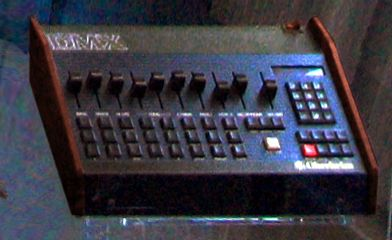

Scheda 033 · 1980 · Los Angeles
Oberheim DMX
Non finge una batteria: la registra, e te la lascia accordare come un nastro
Suoni veri di batteria dentro una macchina del 1980, con la stessa manopola che un tempo accelerava un registratore a bobine.
- ANNO
- 1980
- COSTRUTTORE
- Oberheim
- CAMPIONI
- 8 bit, reali
- VOCI
- Regolabili singolarmente
La macchinaChe cos'è
Fino a quel momento le drum machine imitavano il suono di una batteria con circuiti che oscillano. La DMX lo registra: dentro ci sono ventiquattro campioni digitali a 8 bit di rullante, cassa, piatti e percussioni vere, richiamabili con volume e accordatura regolabili voce per voce. Esce nel 1980 a quasi 2.900 dollari, disegnata da Marcus Ryle per l'azienda di Tom Oberheim, e in pochi anni la trovi sotto la new wave e sotto i primi dischi hip hop.
Chi l'ha costruitaMarcus Ryle (Oberheim)
Tom Oberheim fonda la sua azienda a Los Angeles nel 1969, costruendo prima moduli per altri synth e poi sintetizzatori propri. Alla DMX lavora un giovane ingegnere, Marcus Ryle, che la presenta insieme a Oberheim stesso al NAMM dei primi anni '80. È fra le prime drum machine a mettere dentro suoni registrati invece di oscillatori.
Come funzionaCosa c'è dentro
Ogni voce ha una sua schedina con il campione già inciso: non un oscillatore che disegna un'onda, ma una piccola memoria che la rilegge. Per accordarla non si tocca il timbro: si cambia la velocità con cui il campione viene riletto, esattamente come si accelera o rallenta un nastro. Alzarla lo rende più corto e più acuto, abbassarla lo allunga e lo scurisce — la stessa nota, letta a un'altra velocità.
Chi l'ha usataNei dischi
- New OrderIl ritmo di «Blue Monday» (1983), tutto programmato a mano
- Run-D.M.C.L'unico accompagnamento di «Sucker M.C.'s» (1983)
- Herbie HancockIl backbeat di «Rockit» (1983), sotto il riff campionato dal Fairlight
Da ascoltare
New Order, «Blue Monday» (1983)
Quel rullo di cassa incalzante nell'intro è la DMX programmata colpo per colpo, non un giro suonato.
L'aneddotoUna storia
Nel 1983 i New Order affidano alla DMX il ritmo di «Blue Monday»: sedicesimi di cassa incalzanti e rullate di tom programmate un colpo alla volta, senza un batterista in studio. Lo stesso anno la usano i Run-D.M.C. in «Sucker M.C.'s», dove oltre alla voce e ai dischi scratchati non c'è nient'altro.
Avvertenze
Non ha un filtro per accordare i suoni: cambia la velocità con cui rilegge il campione, come un nastro. Più veloce è più acuto.
Il carosello
Le 6 tavole
Da dove viene
Fonti
- «Oberheim DMX» — Wikipedia (EN) verificata il 2026-09-11
- «Oberheim DMX» — Vintage Synth Explorer verificata il 2026-09-11
- «The Happy Drum Machine Accident That Produced New Order's Best Known Hit» — Reverb verificata il 2026-09-11
- «Sucker M.C.'s» — Wikipedia (EN) verificata il 2026-09-11
Foto: Matt Mechtley (ritagliata da Shoulder-synth) · CC BY-SA 2.0 · Wikimedia Commons — Deutsches Museum